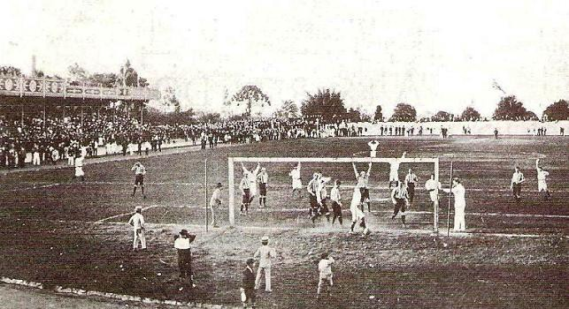
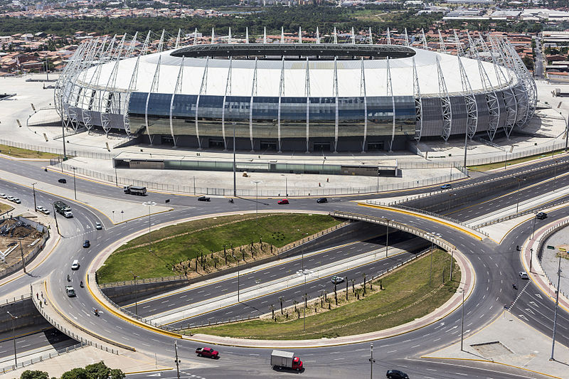
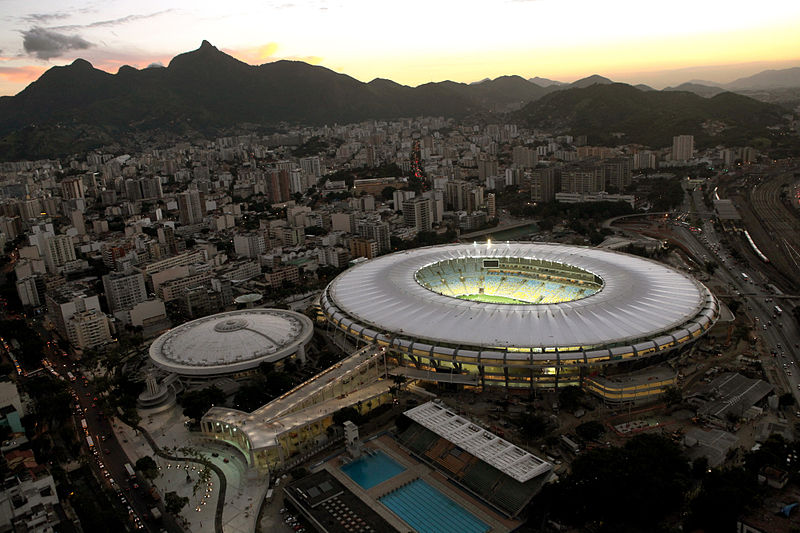
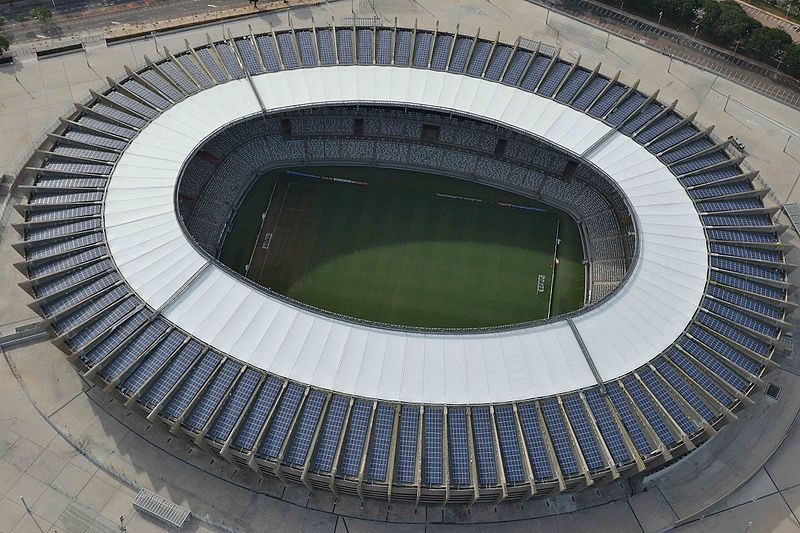
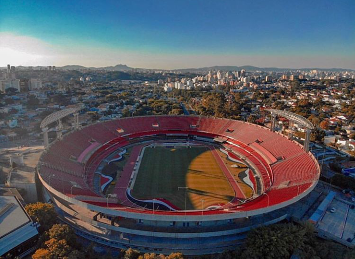

Estadios
CONTATO
CAMPEONATOS
TIMES
HOME
REGRAS
Quem sou eu?
- 
- 
- 

- 
- 
Esse estadio ai sabem qual é ? Sandygate Road ,o primeiro estadio a ser jogado uma partida de futebol
Agora vou mostrar alguns dos maiores estadios brasileiros
Estadio Governador Placido ou tambem conhecido como Castelão localizado em Fortaleza
Est]ádio Jornalista Mário Filho,mais conhecido como Maracanã ,Localizado no Rio De Janeiro
Estádio Nacional de Brasília "Mané Garrincha" ,Conhecido como Mané Garrincha,Localizado em Brasilia
O Estádio Governador Magalhães Pinto Mais conhecido como Mineirão ,Localizado em Belo Horizonte
Estádio Cícero Pompeu de Toledo ,mais conhecido como Morumbi Localizado em São Paulo